방송통신기사 (2021-03-13 기출문제)
1과목: 디지털 전자회로
1. 다음 회로에서 RL 양단에 나타나는 정류출력전압은? (단, 입력에는 최대치 Vm인 사인파가 인가된다.)
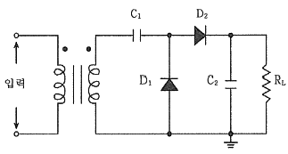
- -Vm
- Vm
- -2Vm
- 2Vm
(정답률: 71%)

2. 반도체 다이오드의 두 가지 바이어스(Bias) 조건으로 맞는 것은?
- 발진과 증폭
- 블록과 비블록
- 유도와 비유도
- 순방향과 역방향
(정답률: 80%)
3. 다음 그림과 같은 평활회로에서 출력 맥동률을 최소화하기 위한 방법으로 틀린 것은?
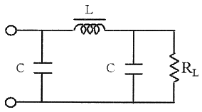
- 정류파형의 주파수를 높인다.
- L값을 크게 한다.
- C값을 크게 한다.
- RL값을 작게 한다.
(정답률: 63%)
4. 증폭기와 정궤환 회로를 이용한 발진회로에서 증폭기의 이득을 A, 궤환율을 β라고 할 때, βA ＜ 1 이면 출력되는 파형은?
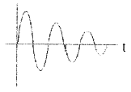
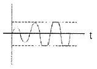
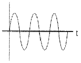
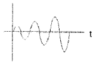
(정답률: 80%)
5. 다음 콜피츠 발진회로가 발진하는 조건은?
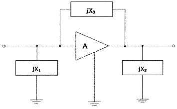
- jX1 ＜ 0, jX2 ＞ 0, jX3 ＞ 0
- jX1 ＜ 0, jX2 ＜ 0, jX3 ＜ 0
- jX1 ＞ 0, jX2 ＜ 0, jX3 ＞ 0
- jX1 ＜ 0, jX2 ＜ 0, jX3 ＞ 0
(정답률: 66%)
6. 병렬저항 이상형 RC발진회로에서 C = 0.01[μF]일 때 1500[Hz]의 발진주파수를 얻기 위한 R값은 약 얼마인가?
- 1.51 [kΩ]
- 2.52 [kΩ]
- 3.23 [kΩ]
- 4.33 [kΩ]
(정답률: 45%)
7. 다음 회로의 종류는?
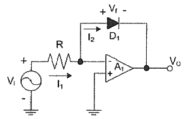
- 반파정류회로
- 전파정류회로
- 피크검출기
- 대수 증폭기회로
(정답률: 62%)
8. 다음 중 드레인 접지형 FET 증폭기에 대한 특성으로 틀린 것은? (단, FET의 파라미터 Am은 상호 전도도이다.)
- 입력 임피던스는 매우 크다.
- 전압 이득은 약 1 이다.
- 출력은 입력과 역위상이다.
- 출력 임피던스는 약 1/Am 이다.
(정답률: 66%)
9. 계단(Step)입력에 대한 연산증폭기의 출력파형이 아래 그림과 같다. 슬루율(Slew Rate)은?
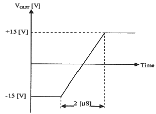
- 15 [V/μS]
- 7.5 [V/μS]
- 10 [V/μS]
- 30 [V/μS]
(정답률: 60%)
10. 다음 바이어스로 회로에서 전류 궤환 회로로 변경하려 한다. 어느 부분이 추가 또는 수정되어야 하나?
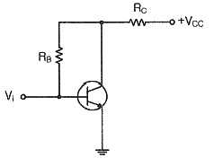
- RC
- RE
- RB
- RC, RE
(정답률: 65%)
11. AM 복조(검파) 회로에서 직선 검파회로의 RC(시정수)가 반송파의 주기보다 짧은 경우에 일어나는 현상은?
- 충방전 특성이 늦어진다.
- 출력은 입력 전압의 반송파 진폭의 제곱에 비례하게 되며, 검파 감도가 높아지게 된다.
- 방전이 빨리 일어나서 저항 R의 단자 전압변동이 크게 일어난다.
- 포락선의 변화에 추종하지 못한다.
(정답률: 42%)
12. 다음 중 단측파대 변조 방식의 특징으로 틀린 것은?
- 점유주파수대역폭이 매우 작다.
- 변복조기 사이에 반송파의 동기가 필요하다.
- 송신출력이 비교적 작게 된다.
- 전송 도중에 복조되는 경우가 있다.
(정답률: 63%)
13. 변조도 80%로 진폭 변조한 피변조파에서 반송파의 전력 Pc와 상측파대 또는 하측파대의 전력 Ps와의 비율은?
- 1 : 0.8
- 1 : 0.55
- 1 : 0.33
- 1 : 0.16
(정답률: 76%)
14. 정보 전송에서 800[Baud]의 변조 속도로 4상 차분 위상 변조된 데이터 신호 속도는 얼마인가?
- 600 [bps]
- 1200 [bps]
- 1600 [bps]
- 3200 [0]
(정답률: 81%)
15. 다음 회로와 등가인 회로는 어느 것인가?
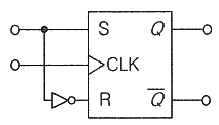
- RS 플립플롭
- JK 플립플롭
- D 플립플롭
- T 플립플롭
(정답률: 56%)
16. 멀티플렉서의 설명이 아닌 것은?
- 특정한 입력을 몇 개의 코드화된 신호의 조합으로 바꾼다.
- N개의 입력 데이터에서 1개의 입력만 선택하여 단일 통로로 송신하는 장치이다.
- 멀티플렉서는 전환 스위치의 기능을 갖는다.
- 데이터 선택기라고도 한다.
(정답률: 65%)
17. 다음 중 Flip-Flop 회로를 쓰지 않는 것은?
- 리미터 회로
- 분주 회로
- 기억 회로
- 2진 계수 회로
(정답률: 63%)
18. 다음 회로에서 기전력 E를 가하고 S/W를 ON하였을 때 저항 양단의 전압 VR은 t초 후 어떻게 표시되는가?
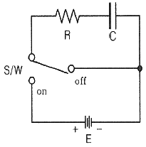
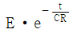
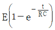
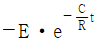
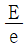
(정답률: 53%)
19. 다음 그림은 T F/F을 이용한 비동기 10진 상향계수기이다. 계수값이 10 이 되었을 때 계수기를 0 으로 하기 위해서는 전체 F/F을 clear 시켜야 하는데 이렇게 하기 위해 (가)에 알맞은 게이트는?
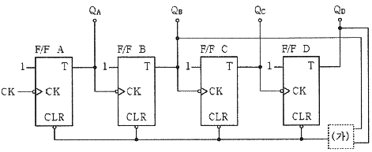
- OR
- AND
- NOR
- NAND
(정답률: 53%)
20. 다음 중 BCD 코드란?
- byte
- bit
- 2진화 10진 코드
- 10진화 2진 코드
(정답률: 70%)
2과목: 방송통신 기기
21. 다음 중 디지털방송 제작 시스템에 대한 설명으로 틀린 것은?
- 비디오 스위처(Video Switcher)는 HD-SDI신호를 입력할 수 있다.
- 업 컨버터(UP-Converter)는 3G-SDI신호를 HD-SDI신호로 만들기 위해 사용한다.
- 입력소스가 아날로그인 경우를 대비하여 A/D Converter를 설치한다.
- HD-SDI신호를 SD-SDI신호로 만들기 위해서는 다운컨버터(Down Converter)를 사용한다.
(정답률: 71%)
22. 다음 중 설명이 잘못된 것은?
- 화소의 집합이 주사선이고 주사선의 집합이 화면이다.
- 주사선의 수가 많을수록 영상의 정밀도가 향상된다.
- 화소를 분해한 것이 주사선이다.
- 1초 동안에 전송되는 영상의 수가 많을수록 화면의 플리커 현상은 감소한다.
(정답률: 65%)
23. 카메라 지지대인 트라이포드(Tripod)에서 카메라를 상하좌우로 회전시키는 구성요소는?
- Leg
- Pader
- Pan/Tilt Bar
- Mounting Plate
(정답률: 74%)
24. 각종 영상신호의 소스와 모니터에 사용하여 “On Air” 중임을 알려주는 것은?
- Tally System
- Border line generator
- 문자슈퍼장치
- 셀프 키
(정답률: 70%)
25. 다음 중 AM방송과 FM방송의 특징에 대한 설명이 잘못된 것은?
- AM방송은 진폭변조방식으로 정보를 송신하나 FM방송은 주파수변조방식으로 정보를 전달한다.
- AM방식은 잡음에 약하고 대역폭이 좁으나 FM방식은 잡음에 강하고 대역폭이 넓다.
- AM방송의 주파수 대역폭은 3.9~26.1[kHz]의 단파를 사용하고 있다.
- FM방송의 주파수 대역폭은 88~108[MHz]이며 채널간격은 200[kHz]이다.
(정답률: 62%)
26. 지상파 디지털 멀티미디어방송(T-DMB) 전송방식 중 서로 직교하는 다수의 반송파를 이용하여 디지털 전송을 행하는 다수 반송파 변조방식은?
- QAM
- PSK
- ASK
- OFDM
(정답률: 79%)
27. 영상신호를 디지털 신호로 변환시켜 화면의 확대, 축소, 모자이크, 회전 등 각종 영상효과를 발생시키는 것은?
- DVE(Digital Video Effect)
- DVD(Digital Video Display)
- DVA(Digital Video Amplifier)
- DAD(Digital Audio Display)
(정답률: 78%)
28. 전파의 속도는 매질에 관하여 무엇에 의해 변화되는가?
- 유전율과 밀도
- 밀도와 투자율
- 도전율과 유전율
- 유전율과 투자율
(정답률: 57%)
29. 비디오 스위처의 기능 중 한쪽의 화면이 다른 화면과 합성되면서 차차 퍼져가고 다음 화면으로 전환하는 것을 무엇이라 하는가?
- 크로마 키(chroma key)
- 와이프(wipe)
- 루미넌스 키(luminance key)
- 리니어 키(linear key)
(정답률: 72%)
30. 해상도가 1920×1080, 순차주사 방식으로, 프레임 주파수가 30fps[frame per second]인 영상신호에서 1초 동안 생성되는 픽셀 수는?
- 15,552,000
- 31,104,000
- 62,208,000
- 124,416,000
(정답률: 70%)
31. 다음 정지위성을 활용하는 디지털 위성방송에 대한 설명 중 틀린 것은?
- 위성이 적도상공에 위치한다.
- 중계기가 지상의 천재지변의 영향을 받기 쉽다.
- 편파를 활용한다.
- 고품질 방송이 가능하다.
(정답률: 57%)
32. 케이블 방송에서 수신한 지상파 방송을 재전송하기 위하여 여러 개의 신호를 하나로 묶는데 사용되는 장비는?
- 변조기
- 복조기
- 다중화기
- 신호처리기
(정답률: 73%)
33. CATV 시스템에서 분기 단자에 신호를 가했을 때 입력레벨과 간선의 출력단자에서 나오는 출력레벨과의 차에 의해 발생하는 손실은?
- 누화손실
- 결합손실
- 단자간 결합손실
- 역결합손실
(정답률: 71%)
34. 다음 중 유선방송국 시스템의 헤드엔드(H/E) 설비로 볼 수 없는 것은?
- 선로 전력 증폭기
- TV신호 처리기
- 파일럿 신호 발생기
- 결합기(Combiner)
(정답률: 32%)
35. 인터넷방송을 위한 실시간 전송 회선으로 보기가 어려운 것은?
- PSTN
- xDSL
- HFC
- FTTx
(정답률: 53%)
36. IPTV의 TCP/IP 네트워크에서 라우터의 주요기능이 아닌 것은?
- 하나의 독립된 네트워크를 구성하여 타 망과 분리
- 다른 네트워크로 트래픽 전송 및 경로설정
- 패킷 필터링을 통한 보안 기능 등을 제공
- 회선의 분배, 결합, 증폭의 기능을 담당
(정답률: 58%)
37. 다음 중 지상파 DMB 시스템의 기술 규격으로 틀린 것은?
- 비디오 기술 : MPEG-4 AVC(Advanced Video Coding)
- 오디오 기술 : MPEG-4 BSAC(Bit Sliced Arithmetic Coding)
- 데이터 기술 : MPEG-4 BIFS(Binary Format For Scene)
- 다중화 기술 : MPEG-2 PS(Program Stream)
(정답률: 66%)
38. 다음 중 ATSC의 PSIP 규격에 기초한 SI(System Information) 정보에 포함되지 않은 것은?
- MGT(Master Guide Table)
- VCT(Virtual Channel Table)
- ETT(Extended Time Table)
- SDT(Service Description Table)
(정답률: 42%)
39. TV 송신시스템 시험용 장비의 신호별 기준 특성임피던스가 틀린 것은?
- 고주파 신호 : 50[Ω]
- VIDEO 신호 : 75[Ω]
- AUDIO 신호 : 600[Ω]
- Trnasport Stream 신호 : 50[Ω]
(정답률: 59%)
40. 일정한 범위에서 출력 신호의 주파수를 반복하여 발생시키는 장치는?
- 오디오 신호발생기
- 볼트미터
- 스펙트럼 아날라이저
- 스위프 신호발생기
(정답률: 74%)
3과목: 방송미디어 공학
41. 다음 중 라디오 방송의 활성화 방안으로 틀린 것은?
- 라디오 방송국의 독립적 운영
- FM방송의 전문성 확보
- 공동제작시스템 구축
- 지역프로그램의 축소
(정답률: 79%)
42. 다음 중 디지털 방송의 장점이 아닌 것은?
- 다채널에 의한 전문 채널의 활성화
- 방송 프로그램의 고품질화
- 다양한 부가 서비스 제공
- 송신 전력의 증가
(정답률: 74%)
43. FM 라디오방송에서 S/N비를 향상 시키기 위해 75[μs]의 시정수를 사용하여 음성 대역의 고역 부분의 레벨을 강조시키는 회로는?
- 펄스 회로
- 매트릭스 회로
- 디엠파시스 회로
- 프리엠파시스 회로
(정답률: 82%)
44. 인간의 가청주파수는 20~20,000[Hz]이다. 가청주파수 3[kHz]의 파장의 길이는 얼마인가?
- 1 [km]
- 10 [km]
- 100 [km]
- 1,000 [km]
(정답률: 69%)
45. 소리의 세기 레벨이 80[dB]인 음원이 두 개 있을 때, 레벨의 합으로 가장 적절한 것은?
- 40[dB]
- 80[dB]
- 83[dB]
- 160[dB]
(정답률: 75%)
46. 다음 중 아이패턴이 불량하게 되는 주요 원인이 아닌 것은?
- 디지털 장비의 클록 주파수 불안정
- 잡음의 혼입
- 강우 감쇠
- 넓은 채널 대역폭
(정답률: 60%)
47. 다음 중 화질의 평가 요소를 구분하는 사항으로 틀린 것은?
- Contrast : 영상신호의 컬러 범위
- Resolution : Sharpness
- Hue : 색상
- Brightness : 백그라운드의 밝기
(정답률: 42%)
48. 정격 100[V]의 백열램프(Incandescent Lamp)를 점등했을 때 전압을 변화시키면 일반적으로 색온도는 어떻게 변화하는가?
- 전압이 변화해도 색온도에는 변화가 없다.
- 전압이 높아지면 색온도가 증가한다.
- 전압이 높아지면 색온도가 감소한다.
- 정격 전압에서 색온도가 가장 높고 정격 전압이 아닐 때는 낮아진다.
(정답률: 75%)
49. 인물 조명을 설명한 것 중 잘못된 것은?
- 베이스 라이트 : 인물, 배경을 포함하여 전체에 균등한 밝기를 주는 확산 조명
- 필 라이트 : 키 라이트에 의해 생기는 어두운 부분을 수정하기 위한 조명
- 터치 라이트 : 수평선이나 배경의 세트에 액센트를 만들기 위한 조명
- 풋 라이트 : 인물의 정면 위쪽으로부터의 조명
(정답률: 75%)
50. 다채널 TV에서 시청자에게 각종 방송프로그램에 대한 정보와 가이드 기능을 제공하는 서비스를 일컫는 용어는?
- NVOD(Near Viedo On Demand)
- VOD(Viedo On Denamd)
- VOI(Voice Over Internet Protocol)
- EPG(Electronic Program Guide)
(정답률: 71%)
51. 멀티미디어 데이터(오디오, 비디오, 컴퓨터그래픽)의 압축방식을 표현하는 표준방식으로 동영상 데이터 검색과 전자상거래 등에 적합하도록 개발된 동영상 압축기술은?
- MPEG-2
- MPEG-4
- MPEG-7
- MPEG-1
(정답률: 53%)
52. 디스크 저장장치인 RAID(Redundant Array Inexpensive Disks)에 대한 설명으로 옳은 것은?
- RAID-0 : 복수의 하드디스크에 이중으로 기록하여 오류에 대한 안정성이 높음
- RAID-1 : 복수의 하드디스크에 분할하여 기록하여 속도를 향상시켰으나 예비기능이 없음
- RAID-3 : Parity Data를 별도의 하드디스크에 기록함으로써 장애 발생시 복구 기능 제공
- RAID-5 : Parity Data를 두 개의 하드디스크에 복사하여 분산 저장하여 안정성을 높임
(정답률: 55%)
53. 다음의 문자열을 무손실 압축했을 경우, 가능한 압축률은 얼마인가?
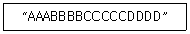
- 1/2
- 1/3
- 1/4
- 1/5
(정답률: 70%)
54. 찰흙 인형 등을 이용해서 개별 프레임을 조금씩 움직여 마치 스스로 움직이는 것처럼 보이게 하는 기법으로 Frame-by-Frame 이라고도 불리는 애니메이션 기법은?
- 스톱모션(stop motion)
- 미니어쳐(miniature)
- 매트 페인팅(matte painting)
- 샌드 애니메이션(sand animation)
(정답률: 79%)
55. 방송 프로그램의 음질을 보정하기 위해 입력신호의 진폭에 따라 이득을 조정하는 장치로 특정 임계치 이상의 진폭을 설정한 비율로 억제하는 것은?
- 이퀄라이저(equalizer)
- 필터(filter)
- 익스팬더(expander)
- 컴프레서(compressor)
(정답률: 65%)
56. 아날로그 오디오의 샘플링 주파수를 44[kHz], 양자화 비트를 10비트로 할 경우, 30초간 샘플링했을 때 저장해야 하는 오디오 데이터 용량은 얼마인가?
- 13,200,000 [byte]
- 1,650,000 [byte]
- 825,000 [byte]
- 44,000 [byte]
(정답률: 60%)
57. TV 방송을 이용하여 뉴스나 일기예보, 여행안내 등을 문자 도형 정보로 제공하는 방송은?
- 문자다중방송
- 정지화 방송
- 코드방송
- 유선방송
(정답률: 67%)
58. 다음 중 거실의 TV에서 인터넷포털 및 디지털 방송을 사용자에게 보다 편리한 인터페이스를 통해 제공하는 서비스는?
- 체감형 서비스
- TV포털서비스
- 멀티모드 서비스
- 멀티미디어 서비스
(정답률: 66%)
59. 국내 디지털 지상파방송의 데이터방송 표준은?
- DVB-MHP
- ACAP
- OCAP
- TPEG
(정답률: 50%)
60. 다음 중 HDTV(High Definition TV)에 대한 설명으로 틀린 것은?
- HDTV 방송을 통해 다양한 부가 서비스가 가능하다.
- 주사선수는 1,920개 이다.
- 화면의 종회비는 9:16 이다.
- 음성품질은 CD급 수준이다.
(정답률: 52%)
4과목: 방송통신 시스템
61. 방송망, 인터넷과 음성망을 통합하여 단일화된 통신망으로 방송과 통신의 융합 서비스를 제공하고자 계획된 차세대 광대역 통신망은 무엇인가?
- BcN
- LAN
- N-ISDN
- IMT2000
(정답률: 56%)
62. 입력된 편성 스케줄에 따라 프로그램을 자동으로 송출하는 설비는?
- AMU
- ATS
- APC
- VMU
(정답률: 72%)
63. 한 사무실이나 가까운 거리의 컴퓨터들을 Twisted Pair(UTP) 케이블을 사용하여 연결하는 네트워크 장비로, 한 사무실의 네트워크 뿐만 아니라 근거리의 다른 사무실과의 네트워크도 연결 가능한 것은?
- 케이블
- 허브
- 모뎀
- 라우터
(정답률: 64%)
64. 다음 중 FM 신호의 복조에 사용되는 방법으로 틀린 것은?
- 포스터실리 검파
- 비 검파
- PLL 검파
- 프리엠퍼시스 검파
(정답률: 43%)
65. FM 수신기에 사용되는 스켈치 회로에 대한 설명 중 맞는 것은?
- 신호입력이 없을 때 잡음을 제거하기 위한 회로이다.
- 충격성 잡음의 영향을 제거하기 위한 회로이다.
- 수신회로의 진폭을 일정하게 한다.
- 변조기능을 수행한다.
(정답률: 56%)
66. 다음 보기와 같은 기능을 수행하는 회로는?
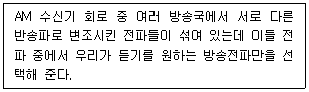
- 고주파 증폭회로
- 동조회로
- 검파회로
- 저주파 증폭회로
(정답률: 54%)
67. 다음 중 음향 신호의 라인레벨의 기준은 몇 dBm로 하는가?
- 0 dBm
- +4 dBm
- -60 dBm
- -70 dBm
(정답률: 58%)
68. 케이블TV 시스템에서 0[dBmV]인 입력신호가 23[dB]의 증폭기와 500[m]의 케이블을 거치면 출력은 얼마가 되는가? (단, Cable Loss 특성이 4[dB]/100[m]이다.)
- 0[dBmV]
- 1[dBmV]
- 2[dBmV]
- 3[dBmV]
(정답률: 75%)
69. 종합유선방송에서 사용하는 전송망 시스템 방식은?
- HFC(Hybrid Fiber Coaxial)방식
- 마이크로웨이브 방식
- 광케이블 방식
- 동축케이블방식
(정답률: 62%)
70. 다음 중 CATV용 동축 케이블의 특성 임피던스는?
- 55 [Ω]
- 70 [Ω]
- 75 [Ω]
- 80 [Ω]
(정답률: 78%)
71. 다음 중 디지털유선방송국설비에서 대역내 채널변조 및 전송조건에 해당되지 않는 것은?
- 대역내 채널은 54[MHz]부터 1,002[MHz] 또는 88[MHz]부터 1,002[MHz]까지의 주파수대역에서 사용하여야 한다.
- 대역내 채널에서 변조된 신호의 채널당 주파수대역폭은 6[MHz]로 하여야 한다.
- 대역내 채널의 변조방식은 64QAM 또는 256QAM 으로 하여야 한다.
- 대역내 채널의 변조방식은 32QAM 또는 512QAM 으로 하여야 한다.
(정답률: 57%)
72. TV 영상 신호를 전송하기 위해 사용하는 변조방식은?
- DSB
- DSB-SC
- SSB
- VSB
(정답률: 74%)
73. 다음 중 지상파 디지털 TV방송에 대한 설명으로 틀린 것은?
- 아날로그 TV 방송보다 훨씬 더 선명한 방송이 가능하다.
- 영상과 음성 이외에도 다양한 데이터 서비스가 가능하다.
- 아날로그 TV와 양립성을 지원하므로 기존의 아날로그 TV 수신기에 별도의 부가장치가 없어도 시청이 가능하다.
- ATSC는 미국방식이고 DVB-T은 유럽방식이다.
(정답률: 73%)
74. 위상방송 수신시스템과 연관성이 적은 것은?
- Set Top Box
- 진행파관(TWT)
- 접시형 안테나
- LNB
(정답률: 48%)
75. 다음 중 유럽의 지상파 디지털 TV 전송방식은?
- NTSC
- ATSC
- ISDB-T
- DVB-T
(정답률: 79%)
76. 지상파 DMB방송의 오디오신호에 대한 조건으로 옳은 것은?
- 오디오 신호의 대역은 20,300[kHz] 이하로 할 것
- 오디오 신호의 표본화 주파수는 최대 48,000[Hz]로 할 것
- 오디오 신호의 표본당 비트 수는 최대 28 이하일 것
- 오디오 신호의 표본당 비트 수는 최대 25 이하일 것
(정답률: 64%)
77. 다음 중 '10Base5'에 대한 설명으로 틀린 것은?
- 전송속도는 10[Mbps] 이다.
- 100[Ω]의 저항 값을 가진다.
- 최대사용거리는 약 500[m] 이다.
- 트랜시버와 컴퓨터를 연결하는 케이블에는 AUI(또는 DIX)포트 커넥터를 사용한다.
(정답률: 57%)
78. 다음 중 야외에서 제작된 방송프로그램을 방송국으로 전송하기 위한 중계시스템의 전송방식으로 적합하지 않은 것은?
- 마이크로웨이브 전송방식
- SNG 전송방식
- 광케이블 전송방식
- DVB-T 전송방식
(정답률: 59%)
79. 전기통신설비에 대한 불량접지 등으로 인한 인명피해 및 시설파괴를 방지하기 위하여 접지저항이 안정적으로 유지되는지 측정을 한다. 다음 중 사업용 전기통신설비의 교환설비·전송설비 및 통신케이블의 접지저항 기준값은 얼마인가?
- 1[Ω] 이하
- 10[Ω] 이하
- 50[Ω] 이하
- 100[Ω] 이하
(정답률: 60%)
80. 다음 중 화상통신회의의 특징이라고 할 수 없는 것은?
- 시간과 경비의 절약, 신속하고 정확한 정보전달이 가능하다.
- 적임자의 회의참석이 용이하다.
- 기업 활용의 극대화 및 효율화를 기대할 수 없다.
- TV회의를 실현하려면 고속, 광대역 네트워크가 필요하다.
(정답률: 78%)
5과목: 전자계산기 일반 및 방송설비기준
81. 특수한 연필이나 수성펜 등으로 사람이 지정된 위치에 직접 표시한 것을 광학적으로 잃어내는 장치는?
- 디지타이저(Digitizer)
- 광학 표시 판독기(OMR)
- 광학 문자 판독기OCR)
- 자기 잉크 문자 판독기(MICR)
(정답률: 70%)
82. 자료의 병렬전송을 직렬전송으로 변경하는 레지스터는?
- 명령 레지스터(IR)
- 메모리 주소 레지스터(MAR)
- 메모리 버퍼 레지스터(MBR)
- 쉬프트 레지스터(Shift Register)
(정답률: 73%)
83. ASCII 코드의 존(Zone)비트와 디지트(Digit) 비트의 구성으로 올바른 것은?
- 존 비트 : 2, 디지트 비트 : 3
- 존 비트 : 3, 디지트 비트 : 3
- 존 비트 : 3, 디지트 비트 : 4
- 존 비트 : 4, 디지트 비트 : 4
(정답률: 75%)
84. 다음의 내용은 마이크로프로세서의 동작을 나타낸 것이다. 동작순서를 바르게 표기한 것은?
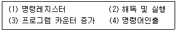
- (3)-(4)-(1)-(2)
- (4)-(1)-(2)-(3)
- (3)-(1)-(4)-(2)
- (4)-(2)-(3)-(1)
(정답률: 57%)
85. 2진수 0011에서 2의 보수(2′s Complement)는?
- 1100
- 1110
- 1101
- 0111
(정답률: 70%)
86. 다음 중 DMA(Direct Memory Access)에 대한 설명으로 틀린 것은?
- 주변장치와 기억장치 등의 대용량 데이터 전송에 적합하다.
- 프로그램 방식보다 데이터의 전송속도가 느리다.
- CPU의 개입 없이 메모리와 주변장치 사이에서 데이터 전송을 수행한다.
- DMA 전송이 수행되는 동안 CPU는 메모리 버스를 제어하지 못한다.
(정답률: 70%)
87. 다음 중 선택된 트랙에서 데이터를 Read 또는 Write 하는데 걸리는 시간은?
- Seek Time
- Search Time
- Transfer Time
- Latency Time
(정답률: 63%)
88. 다음 중 프로그램 언어에 대한 설명으로 틀린 것은?
- 하드웨어가 이해할 수 있는 언어를 기계어라고 부른다.
- 고급언어로 작성된 프로그램은 기계어로 변환해야 실행이 가능하다.
- C, PASCAL, FORTRAN 등은 고급언어이다.
- 어셈블리어는 기계어라고 부른다.
(정답률: 73%)
89. 다음 중 운영체제의 기능으로 틀린 것은?
- 프로세스의 생성, 제거, 중지 등을 다루는 프로세스 관리
- 프로세스의 적재와 회수를 다루는 기억장치 관리
- 입출력 장치의 상태를 파악하는 입출력 장치 관리
- 문서의 작성과 수정, 삭제 등에 관한 사용자 업무처리 관리
(정답률: 68%)
90. 클럭의 주파수가 1[GHz]이고, 명령어 200개를 실행시키고자 한다. 이때 클럭 주기는 얼마인가?
- 0.1 [ns]
- 1 [ns]
- 10 [ns]
- 100 [ns]
(정답률: 41%)
91. 다음 중 종합유선방송국설비에 접속하는 전송선로설비가 무선방식인 경우 분계점이 아닌 것은?
- 진폭변조기와 무선송신기의 최초 접속점
- 펄스변조기와 무선송신기의 최초 접속점
- 주파수변조기와 무선송신기의 최초 접속점
- 텔레비전인코더와 무선송신기의 최초 접속점
(정답률: 37%)
92. 정보통신공사업법에 의한 공사의 종류 중 통신설비공사가 아닌 것은?
- 전송설비공사
- 구내통신설비공사
- 위성통신설비공사
- 방송전송·선로설비공사
(정답률: 54%)
93. 방송의 공적 책임과 관계가 없는 것은?
- 어떠한 규제나 간섭도 받지 않아야 한다.
- 지역간·세대간·계층간·성별간의 갈등을 조장하여서는 아니된다.
- 타인의 명예를 훼손하거나 권리를 침해하여서는 아니된다.
- 범죄 및 부도덕한 행위나 사행심을 조정하여서는 아니된다.
(정답률: 75%)
94. 다음 중 한국방송공사의 업무에 해당되지 않는 것은?
- 신규 방송시설의 인·허가
- 텔레비전방송의 실시
- 위상방송 등 새로운 방송매체를 통한 방송의 실시
- 방송시설의 설치·운영 및 관리
(정답률: 62%)
95. 유선·무선·광선 또는 그 밖의 전자적 방식에 의하여 송신되거나 수신되는 부호·문자·음성·음향 및 영상을 무엇이라고 하는가?
- 방송통신콘텐츠
- 방송통신서비스
- 방송통신커뮤니케이션
- 방송통신기자재
(정답률: 61%)
96. 다음 중 주전송장치에 대한 설명으로 적합한 것은?
- 유선방송국설비와 전송선로설비를 말한다.
- 유선방송국에서 텔레비전 방송신호를 수신하기 위한 안테나 및 증폭장치 등을 말한다.
- 유선방송신호를 증폭·조정·변환 및 혼합하여 선로에 전송하는 장치와 이에 부가된 장치를 말한다.
- 분배기 및 분기기 등에 의한 상·하향 신호의 전송손실을 보상하기 위하여 사용하는 장치를 말한다.
(정답률: 61%)
97. 디지털 지상파 텔레비전 방송용 무선설비의 기술기준 중 방송신호의 표현형식에서 영상 신호의 부호화의 설명이 잘못된 것은?
- 영상신호의 표현형식은 지상파 디지털 텔레비전 방송 송수신 정합표준에서 규정하는 조건에 적합할 것
- 휘도신호와 색차신호의 표본 당 비트수는 8로 할 것
- 영상신호의 형식은 휘도신호(Y)블록 4개와 색차신호(Cb, Cr)블록 가 한 개씩으로 구성된 4:2:0 형식으로 할 것
- 프로그램 채널당 영상 부호화 목표 비트율은 최대 20 Mbps 로 할 것
(정답률: 55%)
98. 지상파 디지털 텔레비전 방송용 무선서비의 기술수준 중 변조 및 송신에 대한 설명으로 옳은 것은?
- 펄스 정형 필터는 제곱근 레이즈드 여현 필터(root-raised cosine filter)를 사용할 것
- 변조방식은 12-VSB 방식으로 할 것
- 전송 속도는 16.762 Maymbols/sec 로 할 것
- 변조된 신호의 채널 당 주파수 대역폭은 8[MHz]로 할 것
(정답률: 60%)
99. 다음 공사도급의 원칙을 설명한 것으로 잘못된 것은?
- 공사도급의 당사자는 각기 대등한 입장에서 합의에 따라 공정하게 계약을 체결하고, 신의에 따라 성실히 계약을 이행하여야 한다.
- 공사도급의 당사자는 그 계약의 체결에 있어서 도급금액·공사기간 기타 대통령령이 정하는 사항을 계약서에 명시하여야 하며, 서명·날인한 계약서를 서로 교부하여 보관하여야 한다.
- 수급인은 하수급인에게 하도급공사의 시공과 관련하여 자재구입처의 지정등 하수급인에게 요구할 수 있다.
- 하도급에 관하여 이 법에 규정하는 것을 제외하고는 「하도급 거래 공정화에 관한 법률」의 해당 규정을 준용한다.
(정답률: 68%)
100. 유선방송국설비의 설치에 대한 준공검사를 받고자 하는 때에는 설치공사 또는 변경공사가 완료된 날부터 몇 일 이내에 준공검사 신청서를 과학기술정보통신부장관에게 제출하여야 하는가?
- 7일
- 17일
- 27일
- 29일
(정답률: 69%)